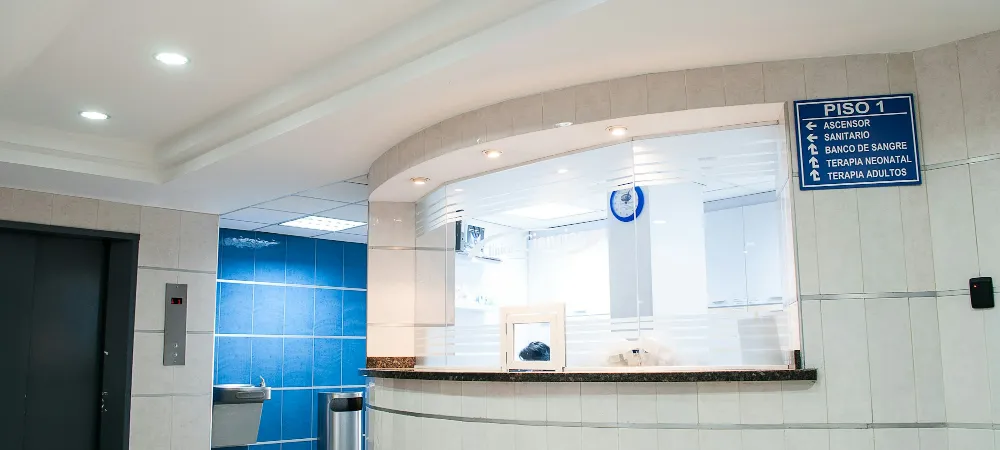

Ranking de las mejores clínicas de Chile
Las clínicas mejor evaluadas del país según el ranking de reputación Merco Salud, y lo que ese ranking no mide: cuánto te va a costar atenderte en cada una.

En una línea: La reputación de una clínica no dice cuánto vas a pagar ahí. Eso lo define el convenio de tu plan con esa clínica.
Las 10 mejores clínicas de Chile
Es el ranking Merco Salud Chile 2025, la primera edición en el país, publicada en noviembre de 2025. Se construye con encuestas a profesionales de la salud, indicadores de gestión y evaluación de servicios clínicos, y su verificación la hace KPMG. Mide prestigio, no cobertura.
- Ranking #1Clínica Alemana de SantiagoLa mejor evaluada del país. Precios del arancel y qué Isapre la cubre bien.Ver ficha →
- Ranking #2Clínica San Carlos de Apoquindo UC ChristusLos médicos y la tecnología de la red UC Christus, con sus valores y qué Isapre calza mejor.Ver ficha →
- Ranking #3Hospital Clínico Universidad de ChileCalidad top 3 con precios muy por debajo del segmento alto.Ver ficha →
- Ranking #4Clínica Santa MaríaReferente en cardiología infantil, con 5 sedes y lo que no tiene código Fonasa.Ver ficha →
- Ranking #5Clínica Universidad de los AndesFuerte por especialidad, con el valor Isapre más bajo que el particular.Ver ficha →
- Ranking #6Clínica Las CondesFicha en preparación.
- Ranking #7Clínica Dávila RecoletaFicha en preparación.
- Ranking #8Clínica IndisaReferente en gran quemado y maternidad, con sede en Maipú.Ver ficha →
- Ranking #9Clínica Meds La DehesaFicha en preparación.
- Ranking #10Hospital del Trabajador ACHSFicha en preparación.
Fuente: ranking Merco Salud Chile 2025, primera edición, verificado por KPMG. Fotos de Clínica Las Condes, Clínica Dávila, Clínica Meds y Hospital del Trabajador: Carlos Figueroa Rojas, Wikimedia Commons, licencia CC BY-SA 4.0, recortadas.
Ojo con leer este ranking como una guía de compra. Mide reputación entre profesionales de la salud y gestión clínica. No mide cuánto te cobran, ni cuánto te bonifica tu plan, ni si tu Isapre tiene convenio ahí. Para tu bolsillo, esa es la parte que importa.
Calcula qué plan te da tu 7% con tu edad y tu sueldo. Si pides propuestas, las armamos con tu clínica.
También tenemos ficha de
RedSalud no entra al ranking como una sola clínica, porque es una red, pero es la más amplia del país y la de precios más bajos.
Qué mirar en tu plan, sea cual sea tu clínica
- Que tu clínica esté como prestador preferente. Si aparece solo en libre elección, la cobertura va con tope de arancel y pagas bastante más.
- Que estén también los centros médicos. Varias clínicas atienden lo ambulatorio en centros aparte, y hay planes que nombran solo la clínica.
- Copago fijo de urgencia en esa clínica. Con copago fijo sabes el monto antes de entrar; sin él, lo sabes cuando te pasan la cuenta.
- Los topes, sobre todo en prótesis. Es donde más se nota la diferencia entre un plan y otro cuando hay una cirugía.
- Las prestaciones sin código Fonasa. Si no tienen código, no hay arancel de referencia y nadie las bonifica, salvo que tu plan traiga un arancel propio.
Con tu edad y tu sueldo te mostramos qué planes puedes elegir y si te alcanza sin poner plata extra. Sin dejar tus datos.
Preguntas frecuentes
¿Cuál es la clínica con mejor reputación de Chile?
Según el ranking Merco Salud Chile 2025, la primera es Clínica Alemana de Santiago, seguida de Clínica San Carlos de Apoquindo UC Christus y del Hospital Clínico de la Universidad de Chile. Es un ranking de reputación, no de cobertura ni de precios.
¿La clínica mejor evaluada es la que me conviene?
No necesariamente. Lo que define cuánto pagas es el convenio de tu plan con esa clínica: si está como prestador preferente, si tiene copago fijo de urgencia y qué topes trae tu plan. Una clínica muy bien evaluada con un plan que no la cubre te sale carísima.
¿Qué Isapre conviene según la clínica donde me atiendo?
Depende de la clínica y del plan. Lo que hay que buscar es que esa clínica aparezca en la oferta preferente del plan, con un buen porcentaje y sin topes bajos, y que tenga copago fijo de urgencia. Dentro de una misma Isapre las coberturas cambian mucho de un plan a otro, así que la pregunta correcta es por el plan, no solo por la Isapre.
¿Cómo sé si mi plan cubre bien en mi clínica?
Busca en tu plan la oferta preferente: ahí tiene que aparecer la clínica y, si te atiendes en sus centros médicos, también ellos. Después revisa el copago de urgencia y los topes de prótesis. Si quieres, lo revisamos contigo gratis.
¿Te atiendes siempre en la misma clínica?
Dinos cuál es y revisamos qué plan te cubre bien ahí, con los topes y el copago de urgencia a la vista. Gratis y sin compromiso.
Quiero que revisen mi plan →Artículos que te podrían interesar
El ranking corresponde a Merco Salud Chile 2025, primera edición, publicada en noviembre de 2025 y verificada por KPMG; mide reputación, no cobertura ni precios. Las coberturas de cada plan se confirman al momento de cotizar. Para evaluar tu caso particular, te recomendamos una asesoría.